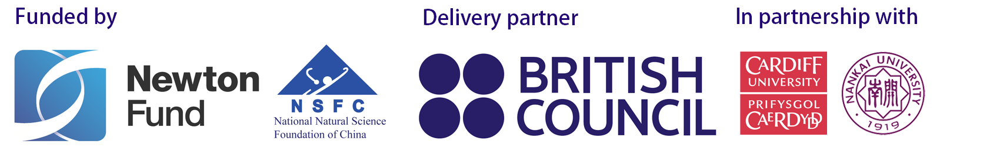

China-UK Workshop on Visual Signal Cognition and UnderstandingAbout the WorkshopRecent development in artificial intelligence (AI) has led to the so-called fourth industrial revolution. By exploiting big data, AI techniques can automate many tasks that traditionally require a huge amount of human effort, but the capabilities of current AI techniques to understand human perception such as emotions are still limited. This recently became an active research topic, especially through analysis of visual signals, which is the dominant form of the human senses. Supported by the British Council / Newton Fund and the Natural Science Foundation of China, this workshop will bring together researchers from both the UK and China to discuss fundamental challenges, current progress, and future directions for research and applications of visual signal cognition and understanding. Advances in this area have a wide range of applications, broadening the use of AI technology when interacting with people, e.g., monitoring and diagnosis assistance for mental health issues such as depression, providing emotion care for the elderly, content retrieval for creative industries, etc. Relevant topics include (but are not limited to) affective computing, computer vision, psychological perception, facial analysis and their applications related to visual cognition and understanding. The workshop will involve participants from both countries sharing their research experience, discussing state-of-the-art and future challenges and research topics. Early career researchers (defined as within 10 years of post-doc experience) are in particular encouraged to attend. The workshop has invited 4 mentors (Prof. Paul Rosin at Cardiff University, Dr Hongying Meng at Brunel University, Prof. Qinghua Hu at Tianjin University, Prof. Mingming Cheng at Nankai University), who are senior academics and will share their experience in research and lead discussions. The aim is to build a network with academics of shared interests that supports long-term, potentially inter-disciplinary collaboration. Blended Workshop (2-3 December 2021)Due to COVID-19, travelling to China this year remains impractical. The workshop will be organised as a blended event. UK participants may travel to Cardiff for a face-to-face workshop, or join the workshop remotely. Participants from China will attend the workshop remotely. Please indicate your preference on the online registration form below. Please note that due to funding and COVID restrictions, there are limited spaces for attending the workshop face-to-face. Please do NOT arrange your travel before receiving the detailed arrangement. Travel and subsistence for attending the workshop physically will be covered by the grant. Registration for attending the blended workshop on 2-3 December 2021 is now open. If you are interested in attending, please complete the registration form (https://forms.gle/oVG3rwikidkpHrka7) by 22 November 2021. Virtual Seminar (10th June 2021)Earlier in the year, following the COVID rules, a one-day seminar was organised which was a virtual event for UK participants, jointly hosted by Prof. Jufeng Yang at Nankai University (China) and Prof. Yukun Lai at Cardiff University (UK). The seminar programme is available here. AcknowledgementsThis work was supported by a Researcher Links grant, ID 2019-RLWK11-10505, under the Newton Fund partnership. The grant is funded by the UK Department for Business, Energy and Industrial Strategy and Natural Science Foundation of China (NSFC) and delivered by the British Council. For further information, please visit https://www.newton-gcrf.org.
 |